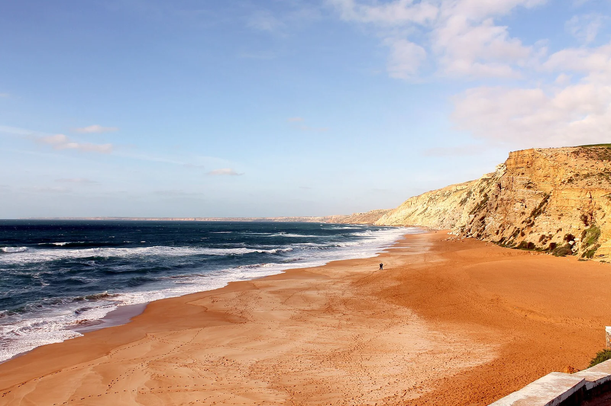

Safi — Ras Lafaa
Maroc · surf, bodyboard

Une des droites tubulaires les plus rapides d'Afrique, sur un fond de dalle rocheuse. Elle ne marche que quelques jours par an, avec une grosse houle et le bon vent.
- Lieu
- Maroc
- Niveau
- Expert
- Activités
- surf, bodyboard
- Type d'eau
- Mer / océan
- Coordonnées
- 32.30, -9.27 (position approximative du secteur)
Dangers à connaître
- Fond rocheux peu profond, chute risquée.
- Vague très rapide qui ferme sur la fin.
- Ne se déclenche que par forte houle : conditions sérieuses.
Le conseil d'Ocean Buddy
Regarde longuement depuis la falaise avant d'y aller. Si tu hésites, c'est non.
Ouvrir dans Ocean Buddy Télécharger sur l'App Store
Source : Description historique Ocean Buddy · vérification externe en attente.